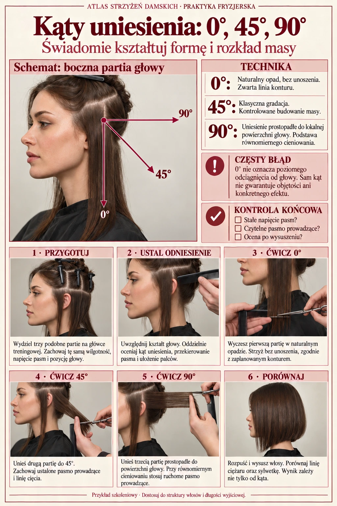
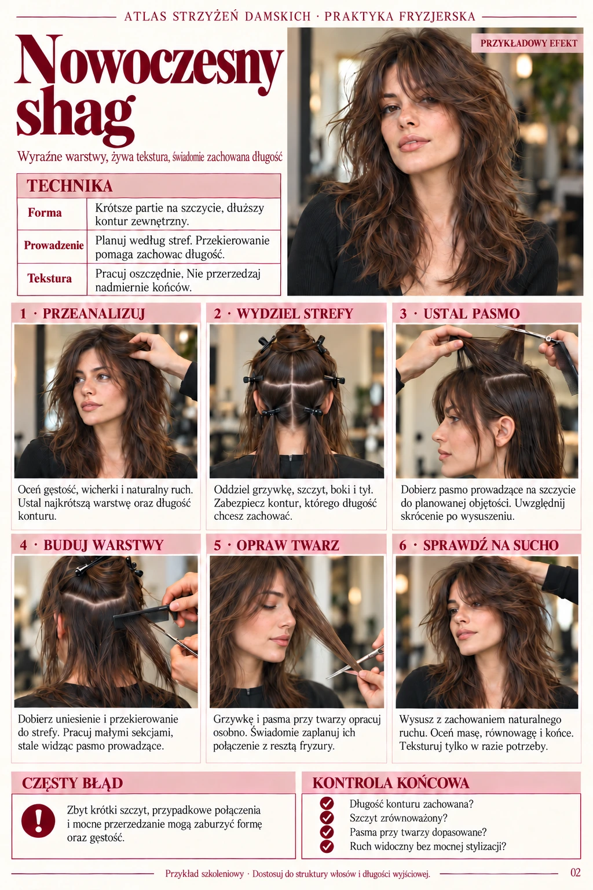
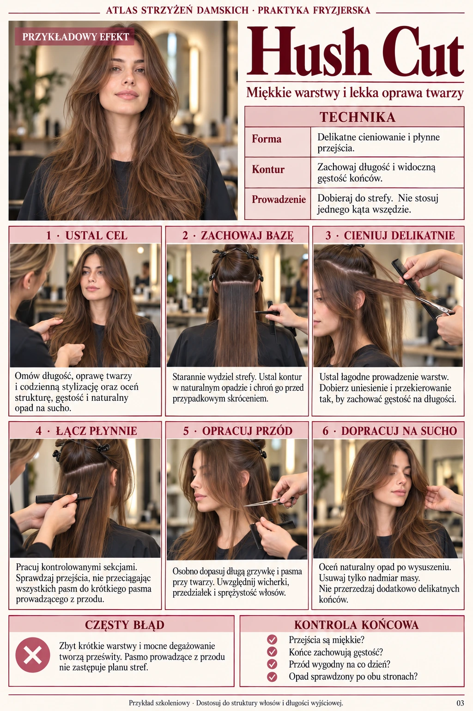
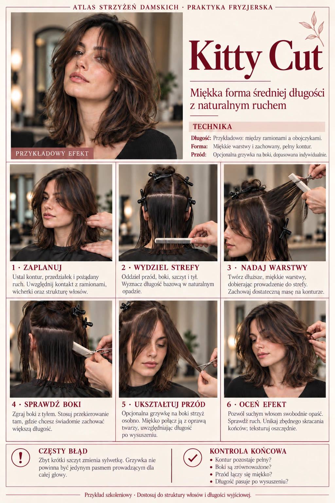
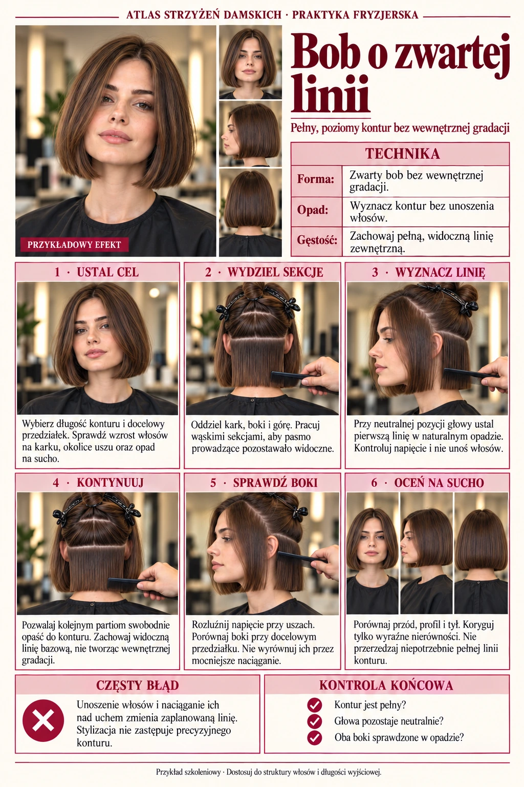
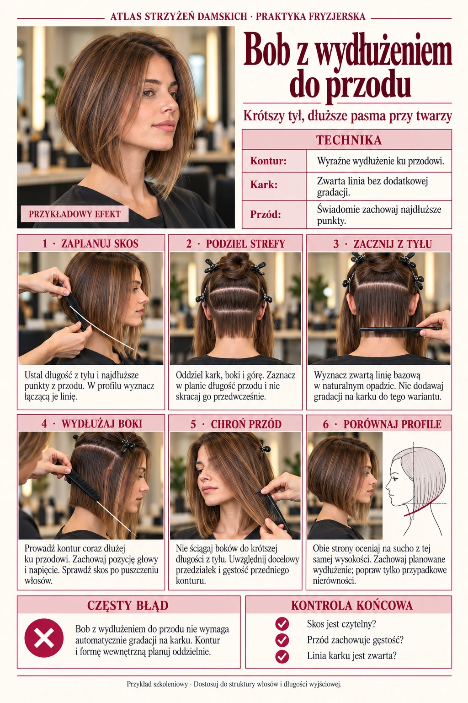
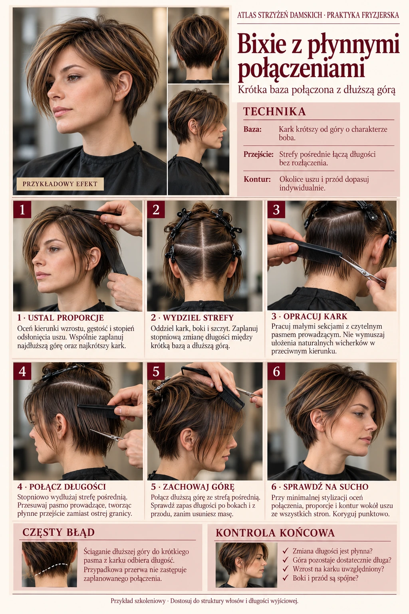
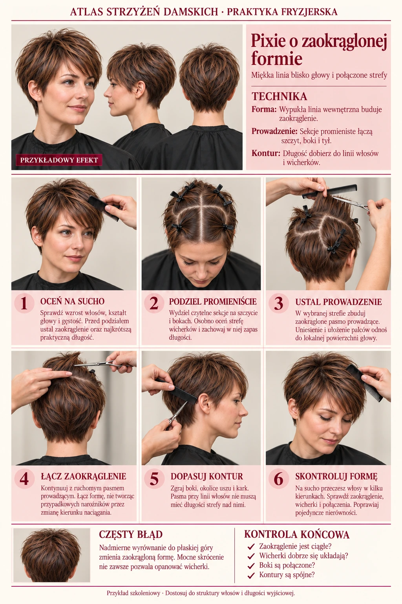
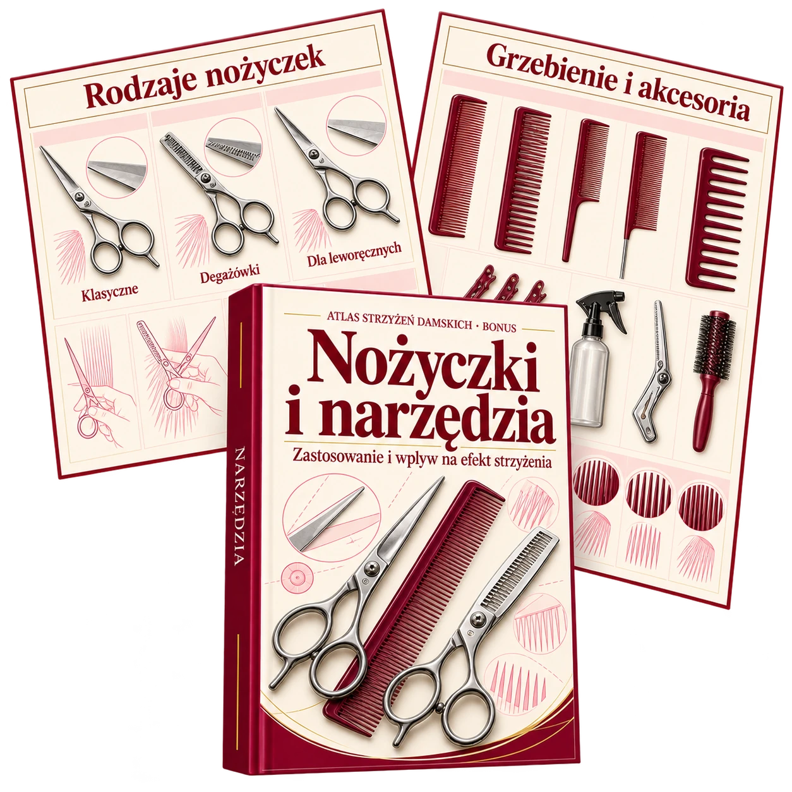

Przed wizytą
Przeanalizuj wybrany fason i uporządkuj w głowie kolejne etapy strzyżenia.
Sprawdzaj podziały, kąty uniesienia i pasma prowadzące bez szukania odpowiedniego fragmentu długiego filmu w trakcie wizyty.
Odśwież wiedzę przed strzyżeniem: od czego zacząć, jak prowadzić pasmo i na co zwrócić uwagę w kolejnym kroku.
✓ Podstawy i formy strzyżeń
✓ Włosy krótkie, półdługie i długie
✓ Podziały i pasma prowadzące
✓ Tekstura, cieniowanie i ruch
Materiały cyfrowe · Do salonu i nauki zawodu








Każdy plan dopasuj do struktury włosów, ich stanu i oczekiwań klientki.
Klientka prosi o fryzurę, której nie strzyżesz na co dzień. Chcesz jeszcze raz prześledzić podziały i kolejność pracy.
Pamiętasz świetne wyjaśnienie, lecz nie wiesz, w której minucie pokazano najważniejsze pasmo prowadzące.
Kąt uniesienia, przekierowanie pasma czy rozkład masy — czasem potrzebujesz szybko sprawdzić jeden szczegół.
Znane techniki przychodzą naturalnie. Nowe warianty łatwiej zaplanować z czytelnym materiałem pomocniczym pod ręką.
Po strzyżeniu analizujesz, jak prowadzenie pasm i kąty uniesienia wpłynęły na ostateczny kształt fryzury.
Przejrzyj najważniejsze etapy przed wizytą, zamiast polegać wyłącznie na pamięci.
Podział, kąt i prowadzenie pasma pokazane razem pomagają zrozumieć, jak te elementy na siebie wpływają.
Wykorzystaj ilustracje do przeanalizowania swojego planu i rozpoznania miejsc, które wymagają szczególnej uwagi.
Porównuj różne formy strzyżeń i dopasowuj je do struktury włosów oraz życzeń klientki.
Sięgaj po zwięzłe materiały jako uzupełnienie praktyki, nauki zawodu i szkoleń.
Pięć uzupełniających tematów, do których możesz wrócić przy planowaniu i analizie strzyżenia.
Rodzaje grzywek, proporcje i połączenie z pozostałą częścią fryzury w przejrzystej formie.
W pakiecieAnaliza typowych nierówności i możliwych przyczyn niepożądanego efektu.
W pakiecie
Narzędzia, ich zastosowania oraz wpływ na kształt i wykończenie strzyżenia.
W pakiecieŁączenie warstw oraz zrozumienie rozkładu długości i masy włosów.
W pakiecieProporcje twarzy jako wskazówka — z uwzględnieniem struktury włosów i indywidualnego stylu.
W pakieciePrzeanalizuj wybrany fason i uporządkuj w głowie kolejne etapy strzyżenia.
Sprawdź szczegół i odnieś go do włosów konkretnej klientki.
Przypomnij sobie zależności techniczne i przeanalizuj własną praktykę.
Przykłady zastosowania, nie opinie klientek ani gwarancja efektów.
Cena pakietu
Poprzednia cena
Sprawdzanie ceny…
Oszczędzasz
Waluta:
Płatność jednorazowa · Bez abonamentu
Pobieramy aktualną cenę z kasy.
Przejdź do bezpiecznej płatności →Przed płatnością sprawdzisz całe zamówienie.
W ofercie przewidziano możliwość zgłoszenia prośby o zwrot w ciągu 7 dni od zakupu, jeśli materiał nie pasuje do Twojego sposobu pracy.
Szczegółowe warunki oraz sposób zgłoszenia sprawdź przed zakupem w informacjach sprzedawcy. Gwarancja nie ogranicza praw przysługujących Ci z mocy prawa.
Zachowaj pliki na swoim urządzeniu i wracaj do wybranych zagadnień wtedy, gdy ich potrzebujesz.
Przejdź do płatności, sprawdź dane zamówienia oraz warunki zakupu i sfinalizuj transakcję.
Skorzystaj z instrukcji dostępu podanych po zakupie. Zapisz pliki na swoim telefonie, tablecie lub komputerze.
Łącz treść kart ze swoim doświadczeniem i zawsze dopasowuj plan do konkretnej osoby oraz jej włosów.
Dla fryzjerek i fryzjerów oraz osób uczących się zawodu pod okiem instruktora. Materiały zakładają podstawową wiedzę o strzyżeniu i nie zastępują nauki zawodu ani praktycznego szkolenia.
Nie. To cyfrowe, wizualne materiały do konsultowania technik i planowania pracy. Pakiet nie jest certyfikowanym szkoleniem ani kursem z opieką instruktora.
Osiem kart pokazuje wizualny układ tematów: ilustracje fryzur, schematy i etapy pracy. Są to przykłady edukacyjne, które wymagają oceny i dostosowania przez osobę wykonującą strzyżenie. Ilustracje nie dokumentują efektów u rzeczywistych klientek.
Podstawy, formy strzyżeń dla włosów krótkich, półdługich i długich oraz teksturę i ruch. Poradniki uzupełniające dotyczą grzywek, błędów w strzyżeniu, narzędzi, przejść i kształtu twarzy.
Materiały cyfrowe możesz przeglądać na telefonie, tablecie i komputerze. Nie wysyłamy fizycznej książki.
Tak, jest to płatność jednorazowa, bez abonamentu. Ostateczny koszt i walutę zamówienia sprawdzisz przed płatnością.
Oferta przewiduje możliwość zgłoszenia prośby o zwrot w ciągu 7 dni od zakupu. Przed płatnością zapoznaj się z warunkami gwarancji i sposobem kontaktu wskazanymi przez sprzedawcę. Twoje ustawowe prawa pozostają bez zmian.